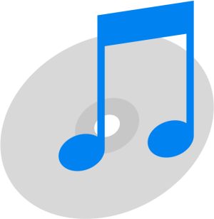

<DOCTYPE html PUBLIC "-//W3C//DTD HTML 4.01 Transitional//EN" http://www.w3.org/TR/html4/loose.dtd>
<html lang="es" ng-app="app">
<head>
	<script language="javascript" type="text/javascript" src="./elements/player.js"></script>
	
	<link rel=" Shortcut Icon" href="./elements/iconitis.ico" type="image/x-icon"/>
	<link href="./elements/style.css" rel="stylesheet"> 	
	<META name="Author" lang="es" content="Lionel Sanchez">
    <meta http-equiv="Content-Type" content="text/html; charset=utf-8" />
</head>

<body>
   <div id="SelectedRadio" >
      <label id="stream" >Selecciona una emisora para escuchar</label>
   </div>
   <br>
   <div id="reproductorBox" class="player">
   </div>
   <select  id = "selectTrack" onchange="cambiarTrack(this.options[this.selectedIndex]);">  
	
		<option value="">Clica en la lista para escuchar</option>
		<option path="https://crtve-ice-edge-2001-fra-eco-cdn.cast.addradio.de/crtve/rne1/main/mp3/high?ar-distributor=ffa0&_art=dj0yJmlwPTk1LjE4LjQ2LjI5JmlkPWljc2N4bC1vcDMzeHM0b2ImdD0xNjE3NzM4OTk2JnM9Nzg2NmYyOWMjZDliOTRiYzJjNmJmMzEwNjI1ZTM1Yzk1OTU0YmNjOWI">RNE 1</option>
		<option path="https://crtve-ice-edge-2001-fra-eco-cdn.cast.addradio.de/crtve/rner3/main/mp3/high?ar-distributor=ffa0&_art=dj0yJmlwPTk1LjE4LjQ2LjI5JmlkPWljc2N4bC1ubTUzeHM0b2ImdD0xNjE3NzM4Nzk0JnM9Nzg2NmYyOWMjYTQxZDc3YTY1Zjk5ZThiNTU3MmY0ZGQwMWJlMjBmMDM">RNE 3</option>
		<option path="https://crtve-ice-edge-2001-fra-eco-cdn.cast.addradio.de/crtve/rnerc/main/mp3/high?ar-distributor=ffa0&_art=dj0yJmlwPTk1LjE4LjQ2LjI5JmlkPWljc2N4bC1rdTUzeHM0b2ImdD0xNjE3NzM4ODk0JnM9Nzg2NmYyOWMjNmYxN2NkYjc4ZTQyNzgyYzkxODFhMDYyMjUwNmQ4Zjc">RNE Clasica</option>
		<option path="https://21273.live.streamtheworld.com/LOS40_DANCE.mp3">Los 40 dance</option>
		<option path="http://208.92.53.98:3690/LOS40_CLASSIC_SC">Los 40 Classic</option>
		<option path="http://r4g-mp3-live.flumotion.com/r4g/r4g-mp3-live.mp3">Radio 4G</option>
		<option path="https://cadena100-cope-rrcast.flumotion.com/cope/cadena100-low.mp3">Cadena 100</option>
		<option path="http://kissfm.kissfmradio.cires21.com/kissfm.mp3">Kiss FM</option>
		<option path="http://icecast-streaming.nice264.com/europafmback">Europa FM</option>
		<option path="https://rockfm-cope-rrcast.flumotion.com/cope/rockfm-low.mp3">Rock FM</option>
		<option path="http://hitfm.kissfmradio.cires21.com/hitfm.mp3">Hit FM</option>
		<option path="https://megastar-cope-rrcast.flumotion.com/cope/megastar-low.mp3">MegaStar</option>
		<option path="http://streams1.mdtradio.com:8020/mdtnewapp">MDT radio</option>
		<option path="http://lyd.nrk.no/nrk_radio_p3_mp3_h">NRK mP3</option>
		<option path="https://lhttp.qingting.fm/live/1157/64k.mp3">Wenzhou RGD Economy and Life Radio</option> 
		<option path="https://eu8.fastcast4u.com/proxy/almeria2?mp=/1">SpectrumFM</option>  
		<option path=""> </option>
   </select>
   
   <script>cargarReproductor();</script>
   
	<!-- div para demas cozaz-->
	<div class="btn">
		<p>Clic en la imagen para ir al reproductor mp3></p>			
		<button>
			<a href="./mp3player/mp3player.html"></a>
		</button>
	</div>
	<br>
	
	
	
	<!--Div for pther things -->
<br>
   <div>
      <script src="./elements/clock.js" type="text/javascript"></script>
      <label id = "reloj" ></label>
      <br> 
      <a href="https://github.com/snLionel90/" >Visita mi GitHub! &copy; snlionel90</a>

   </div>
</body>
</html>
